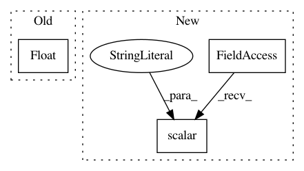

2b77a13f3870712284122f2a5411c7d4b8db82e6,yarll/agents/sac.py,SAC,learn,#SAC#,253
Before Change
summary.value.add(tag="global/Episode_length",
simple_value=float(episode_length))
summary.value.add(tag="global/Reward",
simple_value=float(episode_reward))
self.summary_writer.add_summary(summary, episode)
self.summary_writer.flush()
break
After Change
self.total_episodes += 1
tf.summary.scalar("env/Episode_length", episode_length, self.total_steps)
tf.summary.scalar("env/Reward", episode_reward, self.total_steps)
tf.summary.scalar("env/N_episodes", self.total_episodes, step=self.total_steps)
break
class ActorNetwork(Model):
def __init__(self, n_hidden_layers, n_hidden_units, n_actions, logprob_epsilon):
In pattern: SUPERPATTERN
Frequency: 3
Non-data size: 3
Instances
Project Name: arnomoonens/yarll
Commit Name: 2b77a13f3870712284122f2a5411c7d4b8db82e6
Time: 2019-06-09
Author: arno.moonens@gmail.com
File Name: yarll/agents/sac.py
Class Name: SAC
Method Name: learn
Project Name: arnomoonens/yarll
Commit Name: 34758fa83c25c4b79425bbfa6e56e23618253f37
Time: 2019-03-15
Author: arno.moonens@gmail.com
File Name: yarll/agents/env_runner.py
Class Name: EnvRunner
Method Name: get_steps
Project Name: OpenNMT/OpenNMT-tf
Commit Name: 963710e3d38c9ad1d8b8cc1419a3bd1b3dddde1f
Time: 2018-11-09
Author: guillaumekln@users.noreply.github.com
File Name: opennmt/utils/optim.py
Class Name:
Method Name: optimize